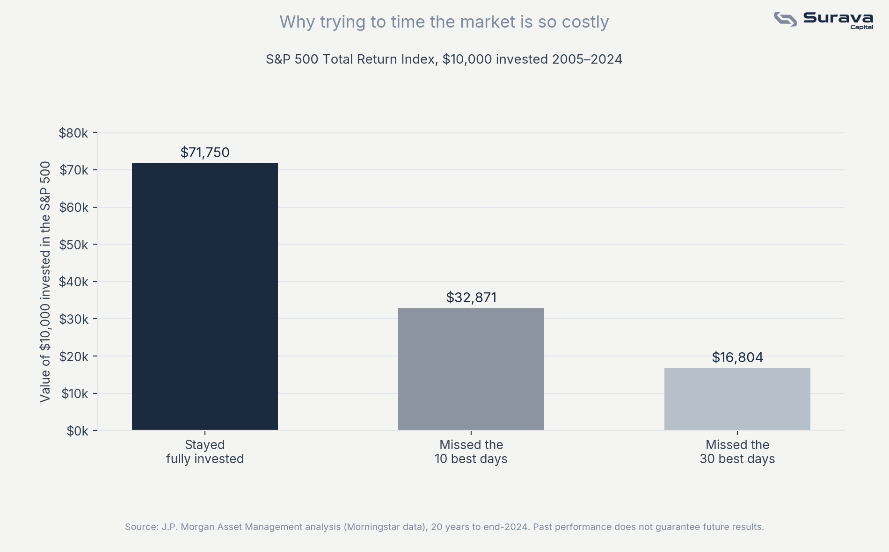

The problem isn't the idea, it's the execution
Market timing isn't wrong in theory, if you could reliably predict downturns and recoveries, you'd want to act on that. The issue is that reliably doing this in practice, over and over, is extraordinarily difficult, and being wrong is costly in a very specific, asymmetric way.

Why the best days are so easy to miss
The figures above come from a widely-cited J.P. Morgan analysis of the S&P 500, the index of 500 large US companies, over the 20 years to the end of 2024. An investor who stayed fully invested turned $10,000 into roughly $71,750. One who missed only the 10 single best days ended with less than half that. The reason is that a large share of a market's best days tend to cluster very close to its worst days, often within the same volatile stretch. This makes intuitive sense: sharp rebounds often happen precisely because sentiment was so negative just before. An investor who sells during the scary part of a downturn, intending to buy back in once things feel safer, frequently ends up missing the sharpest part of the recovery, because it happens before things feel safe again.
What "staying the course" actually means
This isn't an argument for never adjusting a portfolio, rebalancing, changing your allocation as your goals shift, and reducing risk as you approach a specific need for the money are all reasonable, planned actions. The distinction is between a planned adjustment made for a specific reason, and a reactive decision made because markets fell and it felt uncomfortable to stay invested.
This article is for general educational and informational purposes only. It is not investment, tax, or legal advice, or an offer of any regulated financial service. Views expressed are those of Surava Capital.